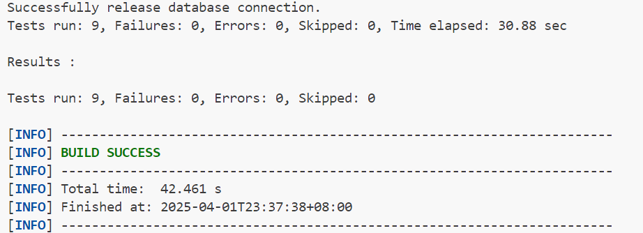
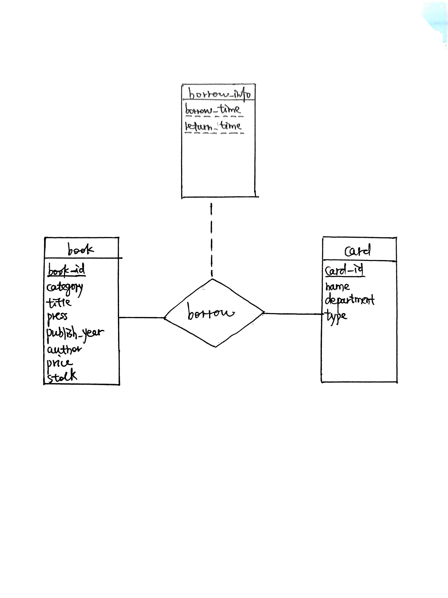

Lab5
Lab5:图书管理系统
杨亿酬 3230105697
2025-3-30 ~ 2025-4-1
1.实验目的¶
- 设计并实现一个精简的图书管理程序，要求具有图书入库、查询、借书、还书、借书证管理等功能。
2.实验需求¶
- 提供一个基于MySQL(或OpenGauss, SQL Server)的精简图书管理程序，该图书管理程序应具备较好的可扩展性、鲁棒性和安全性，并且在高并发场景下仍能正确运行。
- 完成类LibraryManagementSystemImpl中各功能模块的函数，并通过所有测试样例。
3.实验环境¶
- mysql Ver 9.3.0 for Linux on x86_64 (MySQL Community Server - GPL)
- openjdk version "21.0.6" 2025-01-21 OpenJDK Runtime Environment (build 21.0.6+7-Ubuntu-124.04.1) OpenJDK 64-Bit Server VM (build 21.0.6+7-Ubuntu-124.04.1, mixed mode, sharing)
- Apache Maven 3.8.7
- VSCODE Ubuntu 24.04.2 LTS
Start MySQL by
sudo service mysql startthenmysql -u root -pmvn -Dtest=LibraryTest clean testunder/librarymanagementsystem/
4.系统各模块的设计思路和实现¶
jdbc基本编写¶
每个事务处理函数大致包括以下部分
- 建立连接Connection conn = connector.getConn();
- 检查输入合法性(视具体函数检查内容不同)
- 执行操作
- 获取结果更新
- 提交事务
检查输入,执行操作,获取结果更新使用sql语句,通过PreparedStatement防止sql注入,且有利于批量操作
如存在输入不合法等异常应抛出,rollback整条事务并输出提示
storeBook¶
register a book to database.
(1) book_id should be stored to book after successfully
completing this operation.
(2) you should not register this book if the book already
exists in the library system.
2.设置检查书目是否存在的PreparedStatement语句,
String check = "select book_id from book where category = ? and press = ? and author = ? and title = ? and publish_year = ?";(book类的unique要求:unique (category, press, author, title, publish_year))checkstmt = conn.prepareStatement(check);将string转化为sql语句通过
checkstmt.set<TypeName>(<Index>,<Content>);设置查询变量res = checkstmt.executeQuery();执行查询操作并获取返回结果查询有结果,说明存在重复书籍,抛出异常,并撤回事务
3.执行insert操作
同样先设置PreparedStatement语句,
String insert = "insert into book(category, title, press, publish_year, author, price, stock) values(?, ?, ?, ?, ?, ?, ?)";,转化为sql语句,设置变量并执行,获取结果4.book表要求每个实体有自增的primary key
book_id,因此需要在执行查询时设置获取返回的自增key,insertstmt = conn.prepareStatement(insert, Statement.RETURN_GENERATED_KEYS);根据获取结果更新book_id,通过
getGeneratedKeys()函数为插入的book设置book_id,如果没有获取到book_id抛出异常并rollback //update bookId by using the increment book_id
//getGeneratedKeys for getting the increment primary key(column 1)
try (ResultSet generatedKeys = insertstmt.getGeneratedKeys()) {
if (generatedKeys.next()) {
book.setBookId(generatedKeys.getInt(1));
} else {
throw new SQLException("Failed to get generated book_id.");
}
}
commit(conn);提交事务
incBookStock¶
increase the book's inventory by bookId & deltaStock.
(1) you need to check the correctness of book_id
(2) deltaStock can be negative, but make sure that
the result of book.stock + deltaStock is not negative!
update book set stock = stock + ? where book_id = ?stock非负检查
select stock from book where book_id = ?异常处理:
(1)bookId不存在
if (rowsAffected == 0) throw new SQLException("Book not found.");(2)stock为负
if (stock < 0) throw new SQLException("Stock cannot be negative.");
storeBook(List)¶
batch store books.
(1) you should not call the interface storeBook()
multiple times to achieve this function!!!
hint: use {@link PreparedStatement#executeBatch()}
and {@link PreparedStatement#addBatch()}
(2) if one of the books fails to import, all operations
should be rolled back using rollback() function provided
by JDBC!!!
(3) when binding params to SQL, you are required to avoid
the risk of SQL injection attack!!!
select book_id from book where category = ? and press = ? and author = ? and title = ? and publish_year = ?insert操作实现
insert into book(category, title, press, publish_year, author, price, stock) values (?, ?, ?, ?, ?, ?, ?);Batch的使用:逐本检查加入Batch,全部完成后批量执行for(Book book : books) {
//check bookId exists...
//insert book...
insertstmt.addBatch();
}
int[] results = insertstmt.executeBatch();
for (int i = 0; i < books.size(); i++) {
Book book = books.get(i);//获取book对象
if (results[i] == PreparedStatement.EXECUTE_FAILED) {
//检查插入异常
throw new SQLException("Batch insert failed for book: " + book.getTitle());
}
if (generatedKeys.next()) {
//设置bookId
book.setBookId(generatedKeys.getInt(1));
}
}
removeBook¶
remove this book from library system.
Note that if someone has not returned this book,the book should not be removed!
select book_id from book where book_id = ?处于被借状态检查,return_time == 0表示未被归还
String check_borrowed = "select return_time from borrow where book_id = ?";
ResultSet res2 = check_borrowed_stmt.executeQuery();
//book not returned
if (res2.next() && res2.getLong("return_time") == 0) {
return new ApiResult(false, "Book is borrowed.");
}
delete from book where book_id = ?
modifyBookInfo¶
bookId存在检查,略book状态更新
update book set category = ?, title = ?, press = ?, publish_year = ?, author = ?, price = ? where book_id = ?Note:根据测试用例，只需要不修改book_id与stock即可，不需要在book_id和stock不同时直接抛出异常
querybook¶
query books according to different query conditions.
(1) you should let the DBMS to filter records
that do not satisfy the conditions instead of
filter records in your API.
(2) when binding params to SQL, you also need to avoid
the risk of SQL injection attack.
(3) [*] if all else is equal, sort by book_id in
ascending order!
query results should be returned by ApiResult.payload and should be an instance of {@link queries.BookQueryResults}
select * from book where 1=1 and ...使用
1=1配合and有效连接，通过conditions.get...()获取查询要求，最后利用order by与sort order调整结果顺序(默认顺序book_id ASC，多个顺序可以按序并存)，同样使用preparestatement避免sql注入添加变量
if (conditions.get...() != null) stmt.set<Type>(index++, conditions.get...());查询结果构造与输出
while (res.next()) {//遍历查询结果
Book book = new Book( //新建book对象存放查询结果
//获取查询各项结果
res.getString("category"),
res.getString("title"),
res.getString("press"),
res.getInt("publish_year"),
res.getString("author"),
res.getDouble("price"),
res.getInt("stock")
);
//将查询得到的book_id设置为结果的book_id
book.setBookId(res.getInt("book_id"));
books.add(book);
}
return new ApiResult(true, "Query succeed.",new BookQueryResults(books));
//返回BookQueryResults的实例
borrowBook¶
a user borrows one book with the specific card.
the borrow operation will success iff there are enough books in stock & the user has not borrowed the book or has returned it.
select stock from book where book_id = ? FOR UPDATEcard_id存在性检查
select card_id from card where card_id = ?已借未还检查
select * from borrow where card_id = ? and book_id = ? and return_time = 0 FOR UPDATENOTE:确保一本书可被同一人重复借阅，只要上次借阅已经归还
借书记录插入操作
insert into borrow(card_id, book_id, borrow_time, return_time) values (?, ?, ?, 0)(使用borrow_time,return_time而非borrowTime,returnTime)借书完成，藏书量stock - 1
update book set stock = stock - 1 where book_id = ?
returnBook¶
bookId存在检查,select * from borrow where card_id = ? and book_id = ? and borrow_time = ?NOTE:必须检查borrow_time，避免归还已经归还的书(borrow_time == 0)
更新return_time
update borrow set return_time = ? where card_id = ? and book_id = ? and borrow_time = ?NOTE:必须检查borrow_time,修改对应borrow_time的return_time，避免错误修改同一人此前相同的书籍借用记录
还书完成，藏书量stock + 1，类似borrowBook
showBorrowHistory¶
list all borrow histories for a specific card.
the returned records should be sorted by borrow_time DESC, book_id ASC
@param cardId show which card's borrow history
@return query results should be returned by ApiResult.payload
and should be an instance of {@link queries.BorrowHistories}
select * from borrow join book on borrow.book_id = book.book_id where card_id = ? order by borrow_time DESC, book.book_id ASC join连接两表，card_id作为查询参数查询结果构造与输出（类似querybook）
return new ApiResult(true, "Got borrow history",new BorrowHistories(historyItems));
registerCard¶
create a new borrow card. do nothing and return failed if
the card already exists.
Note that card_id should be stored to card after successfully
completing this operation.
select card_id from card where department = ? and type = ? and name = ?执行插入操作
insert into card(department, type, name) values (?, ?, ?)设置自增的card_id
card.setCardId(generatedKeys.getInt(1))
removeCard¶
simply remove a card.
Note that if there exists any un-returned books under this user,
this card should not be removed.
未归还书籍检查
select * from borrow where card_id = ? and return_time = 0删除操作执行
delete from card where card_id = ?
showCards¶
list all cards order by card_id.
@return query results should be returned by ApiResult.payload
and should be an instance of {@link queries.CardList}
select * from card order by card_id查询结果构造与输出（类似querybook）
return new ApiResult(true, "Got cards record.",new CardList(cards));返回CardList的实例
parallelBorrowBookTest¶
要求：多线程同时借书，应有且仅有一个线程借书成功
conn.setTransactionIsolation(Connection.TRANSACTION_SERIALIZABLE);
conn.setAutoCommit(false);
String check_stock = "select stock from book where book_id = ? FOR UPDATE";
setTransanctionIsolation()设置事务隔离，setAutoCommit(false);关闭自动提交，FOR UPDATE语句实现行级锁定，阻止其他事务修改行
5.系统验证测试¶
通过全部9个测试输出SUCCESS

6.遇到的问题及解决方法¶
1.使用自增的book_id,card_id更新表项
2.batch语句的使用，应addBatch()逐一插入再一次性操作
3.修改书本信息时stock，book_id不正确时是否应该抛出异常
4.querybook过程中多个排序顺序的问题
5.borrowTime,returnTime,borrow_time,return_time的区分问题
6.同一人对同一本书重复借阅的问题（归还后再借，未归还再借）
7.并发借书的事务隔离与锁定
7.思考题¶
1.绘制该图书管理系统的E-R图。¶

2.描述SQL注入攻击的原理(并简要举例)。在图书管理系统中，哪些模块可能会遭受SQL注入攻击？如何解决？¶
原理：通过在应用程序的输入字段中插入恶意的SQL代码，从而欺骗数据库服务器执行非预期的SQL命令。
例：某数据库后端登录系统如下
--为sql语句的注释，则原登录系统语句如下密码检查被注释，攻击者无需密码直接以admin身份登录
图书管理系统中易受sql注入攻击的模块：
登录模块（如上）
批量存书：假设数据库批量存书系统后端如下
INSERT INTO book (category, title, press, publish_year, author, price, stock)
VALUES ('科技', '数据库原理', '清华出版社', 2020, '王强', 45.00, 10),
('文学', '红楼梦', '人民文学出版社', 2010, '曹雪芹', 59.80, 5),
-- 更多图书数据...
('科技', '正常图书', '正常出版社', 2022, '正常作者', 30.00, 5),
('恶意', '恶意图书', '恶意出版社', 2022, '恶意作者', 0.00, 0); DROP TABLE book; --', '', 0, '', 0, 0)
查询：假设数据库批量查询系统后端如下
攻击者提交 返还全部图书信息
解决方案： 1.使用参数化查询(PreparedStatement):严格控制用户输入的类型
String sql = "SELECT * FROM book WHERE title = ?";
PreparedStatement stmt = connection.prepareStatement(sql);
stmt.setString(1, userInput);
3.最小权限：严格控制用户权限，给予用户最小的登录权限
4.使用防火墙，ORM框架等实现防注入
3. 在InnoDB的默认隔离级别(RR, Repeated Read)下，当出现并发访问时，如何保证借书结果的正确性？下面是一个在该场景下可能会出现非预期结果的例子：¶
a. A启动事务，通过JDBC查询到余量1，代码逻辑判定借书成功，修改库存； b. B启动事务，在A尚未提交事务时，通过JDBC同样查询到余量为1，此时代码逻辑同样判定借书成功，修改库存； c. A、B分别提交事务，最后结果显示余量为-1，不符合预期。 【提示】 ● 了解InnoDB默认隔离级别(RR, Repeated Read)实现的原理，以及快照读和当前读的区别，能够帮助你解决这个问题。 ● 在实际应用（例如电商系统）中，“秒杀”、“团购”是频繁出现的一些活动。“秒杀”活动通常伴随着高并发、访问量激增等特点。当并发请求数过多时，“秒杀”系统又是如何防止库存超卖的呢？可以作为课外拓展去了解一下。 ● 测试用例LibraryTest::parallelBorrowBookTest()将会测试在该场景下你的程序是否能够执行得到预期的结果。
[Answer]
InnoDB默认隔离级别(RR, Repeated Read)实现原理
InnoDB通过多版本并发控制(MVCC)和间隙锁(Gap Lock)的组合来实现RR隔离级别
- 事务首次读取时创建ReadView，这个ReadView会在整个事务期间持续使用
- 通过比较数据行的DB_TRX_ID(最近修改该行的事务ID)与ReadView来判断可见性：
trx_id:生成ReadView时活跃的事务ID列表
如果DB_TRX_ID < min_trx_id：可见（事务已提交）
如果DB_TRX_ID >= max_trx_id：不可见（事务在ReadView创建后开始）
如果min_trx_id <= DB_TRX_ID < max_trx_id：
在m_ids中：不可见（事务未提交）
不在m_ids中：可见（事务已提交）
- 通过undo log链访问历史版本数据
间隙锁:锁定索引记录之间的间隙防止幻读
快照读与当前读
- 快照读：事务首次读操作会建立快照(ReadView)，后续读操作都基于这个快照，保证可重复读（通过ReadView和undo log实现，高并发，无阻塞）
- 当前读：读取记录的最新提交版本（需要加锁，可能因为等待导致阻塞）
"秒杀"系统
- Redis 预减库存 + 异步队列
秒杀前将库存加载到 Redis。
用户请求时，先通过 Redis 的原子操作（如 DECR）预减库存。
成功预减后，将订单请求发送至 Kafka/RabbitMQ 异步处理
- 分布式锁：确保分布式环境下同一时间只有一个请求能扣减库存
- 秒杀令牌机制：控制参与秒杀的用户数
秒杀开始前，生成固定数量的令牌存入 Redis。
用户需先获取令牌才能下单，无令牌则直接拒绝
- ...
parallelBorrowBook并发访问的正确性保证
setTransanctionIsolation()设置事务隔离，setAutoCommit(false);关闭自动提交，FOR UPDATE语句实现行级锁定，阻止其他事务修改行